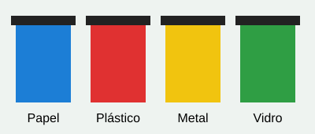
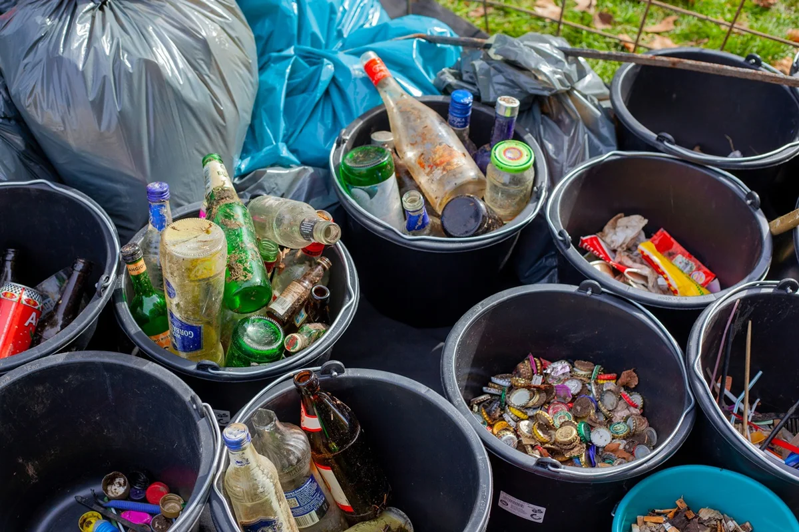
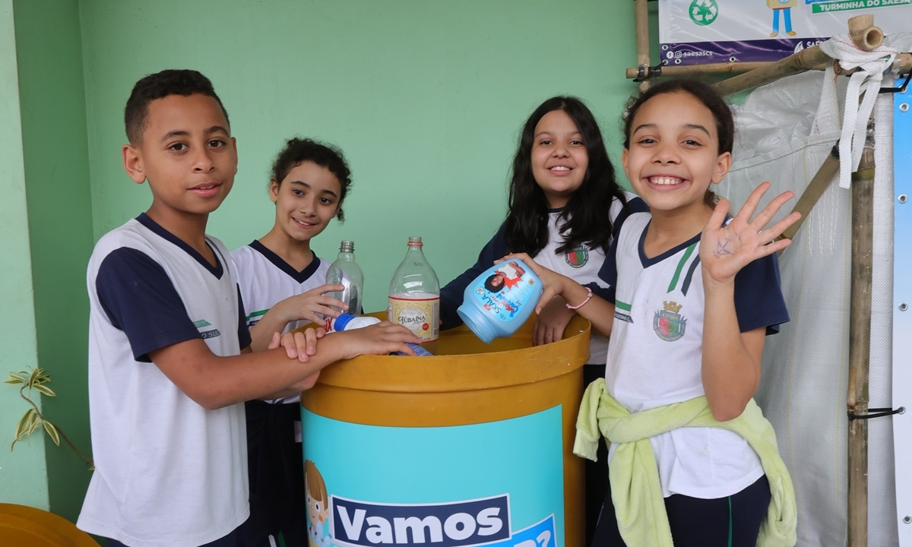
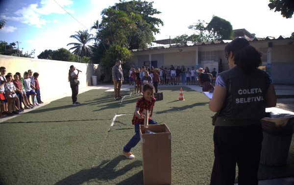
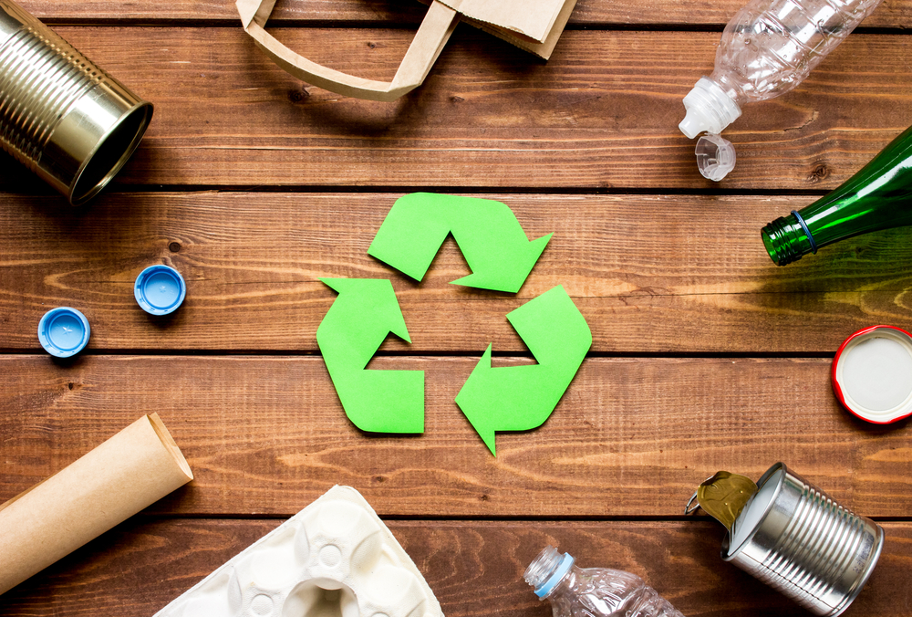
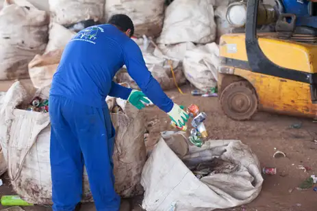
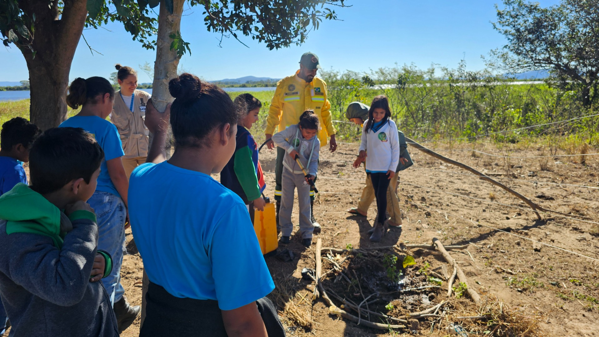

Início
Este site faz parte de um trabalho sobre a ODS 12 da ONU (Consumo e produção responsáveis).
Nosso tema é o ensino da reciclagem para crianças.
O Brasil ainda recicla muito pouco do lixo que produz. Crianças que aprendem cedo a separar o lixo
levam esse hábito para casa e para a vida adulta. Por isso, mostramos aqui notícias, desafios, metas e
formas de ajudar, e no final da página há um jogo em que a criança aprende brincando
a colocar cada lixo na lixeira da cor certa.

Notícias
Educação ambiental é um dos caminhos para ampliar a reciclagem no país

Ler a notícia (Metrópoles, dez/2025)
Em carta a prefeito, alunos de São Caetano pedem coleta seletiva e inspiram projeto

Ler a notícia (Diário do Grande ABC, dez/2025)
Nossa Escola Recicla leva educação ambiental às escolas de Nova Iguaçu

Ler a notícia (Correio da Manhã, jul/2026)
Brasil reciclou 60,4% de papel em 2025, alta de 1,6% frente ao ano anterior

Ler a notícia (Mercado & Consumo, out/2026)
Brasil reciclou 97,3% das latinhas de alumínio em 2024

Ler a notícia (O Povo, ago/2025)
Junho Verde do Ibama encerra com ação inédita em escolas ribeirinhas do Pantanal sul-mato-grossense

Ler a notícia (eCycle)
Desafios
Principais desafios para ensinar reciclagem às crianças:
- O Brasil recicla pouco: segundo a Abrema, citada pelo Metrópoles, só 8,7% do lixo urbano foi reciclado. A criança aprende na escola, mas muitas vezes não vê isso acontecer na rua ou em casa.
- Falta de coleta seletiva: muitos bairros e escolas não têm lixeiras separadas, então fica difícil praticar.
- Assunto abstrato: para uma criança, "reciclar" é uma ideia difícil. Ela entende melhor vendo, tocando e brincando.
- Muitas regras para lembrar: cada cor de lixeira é para um material, e algumas embalagens misturam materiais.
- Exemplo dos adultos: se a família não separa o lixo, a criança perde o hábito aprendido na escola.
- Manter o interesse: aulas só com texto cansam rápido. É preciso usar atividades, jogos e desafios.
Como ajudar
- Em casa: separe o lixo reciclável do orgânico e chame a criança para ajudar.
- Ensine as cores: azul = papel, vermelho = plástico, amarelo = metal, verde = vidro.
- Reduza e reutilize: use garrafas e potes de novo antes de jogar fora.
- Na escola: peça lixeiras de coleta seletiva e projetos de reciclagem.
- Ensine brincando (forma lúdica): jogos e brincadeiras deixam o aprendizado mais divertido e fácil de lembrar.
Nossa proposta é a forma lúdica. Como exemplo, criamos o
Jogo da Reciclagem, no final da página: a criança anda pela cidade, pega o lixo do chão
e precisa jogar cada um na lixeira da cor correta para ganhar pontos.
Sobre
A dupla
- Geovane Almeida
- Andre Orue
Como o site foi feito
- HTML5, CSS3 e JavaScript
- Editor: Visual Studio Code
- Firebase Realtime Database (para o modo online do jogo)
- Netlify (para colocar o site na internet)
Uso de Inteligência Artificial
Usamos a IA Claude (da empresa Anthropic) principalmente no jogo:
ela nos ajudou com o mapa feito como uma matriz de 15 colunas por 11 linhas
(cada quadrado tem uma posição de linha e coluna) e com a lógica de andar, pegar e jogar o lixo.
Na versão online, a IA também ajudou a ligar o jogo ao Firebase (nomes, jogadores no mapa e ranking).
Também usamos a IA para ajudar a pesquisar e organizar os textos do site.
Jogo da Reciclagem (online)
Pegue os lixos e leve-os a lixeira da cor correta.
Ranking - jogando agora
Conectando...
Como jogar
- Setas ou W, A, S, D: mover o personagem.
- Andar sobre um lixo: guarda o lixo no inventario (maximo de 5).
- Teclas 1 a 5 ou clique no espaco: escolhe o item do inventario.
- Tecla E ou Espaco perto de uma lixeira: joga o item escolhido.
- Lixeira correta: +1 ponto. Lixeira errada: -1 ponto.